Featured Coach
Zhou Lei
A Badminton Star, Transitioned to Coaching, Leaving a Lasting Global Impact
By Fay Yu
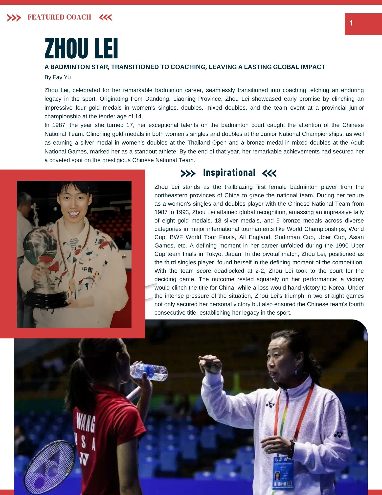
Zhou Lei, celebrated for her remarkable badminton career, seamlessly transitioned into coaching, etching an enduring legacy in the sport. Originating from Dandong, Liaoning Province, Zhou Lei showcased early promise by clinching an impressive four gold medals in women's singles, doubles, mixed doubles, and the team event at a provincial junior championship at the tender age of 14.
In 1987, the year she turned 17, her exceptional talents on the badminton court caught the attention of the Chinese National Team. Clinching gold medals in both women's singles and doubles at the Junior National Championships, as well as earning a silver medal in women's doubles at the Thailand Open and a bronze medal in mixed doubles at the Adult National Games, marked her as a standout athlete. By the end of that year, her remarkable achievements had secured her a coveted spot on the prestigious Chinese National Team.
❯❯❯ Inspirational ❮❮❮
Zhou Lei stands as the trailblazing first female badminton player from the northeastern provinces of China to grace the national team. During her tenure as a women's singles and doubles player with the Chinese National Team from 1987 to 1993, Zhou Lei attained global recognition, amassing an impressive tally of eight gold medals, 18 silver medals, and 9 bronze medals across diverse categories in major international tournaments like World Championships, World Cup, BWF World Tour Finals, All England, Sudirman Cup, Uber Cup, Asian Games, etc. A defining moment in her career unfolded during the 1990 Uber Cup team finals in Tokyo, Japan. In the pivotal match, Zhou Lei, positioned as the third singles player, found herself in the defining moment of the competition. With the team score deadlocked at 2-2, Zhou Lei took to the court for the deciding game. The outcome rested squarely on her performance: a victory would clinch the title for China, while a loss would hand victory to Korea. Under the intense pressure of the situation, Zhou Lei's triumph in two straight games not only secured her personal victory but also ensured the Chinese team's fourth consecutive title, establishing her legacy in the sport.
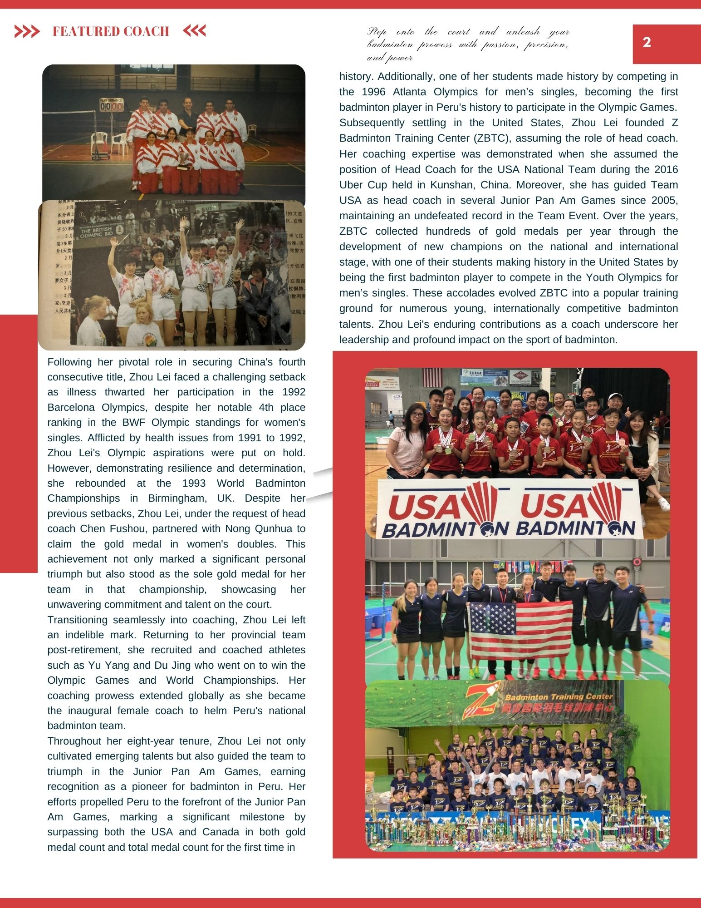
Following her pivotal role in securing China's fourth consecutive title, Zhou Lei faced a challenging setback as illness thwarted her participation in the 1992 Barcelona Olympics, despite her notable 4th place ranking in the BWF Olympic standings for women's singles. Affected by health issues from 1991 to 1992, Zhou Lei's Olympic aspirations were put on hold. However, demonstrating resilience and determination, she rebounded at the 1993 World Badminton Championships in Birmingham, UK. Despite her previous setbacks, Zhou Lei, under the request of head coach Chen Fushou, partnered with Yong Qunhua to claim the gold medal in women's doubles. This achievement not only marked a significant personal triumph but also stood as the sole gold medal for her team in that championship, showcasing her unwavering commitment and talent on the court.
Transitioning seamlessly into coaching, Zhou Lei left an indelible mark. Returning to her provincial team post-retirement, she recruited and coached athletes such as Yu Yang and Du Jing who went on to win the Olympic Games and World Championships. Her coaching prowess extended globally as she became the inaugural female coach to helm Peru's national badminton team. Throughout her eight-year tenure, Zhou Lei not only cultivated emerging talents but also guided the team to triumph in the Junior Pan Am Games, earning recognition as a pioneer for badminton in Peru. Her efforts propelled Peru to the forefront of the Junior Pan Am Games, marking a significant milestone by surpassing both the USA and Canada in both gold medal count and total medal count for the first time in history.
Additionally, one of her students made history by competing in the 1996 Atlanta Olympics for men's singles, becoming the first badminton player in Peru's history to participate in the Olympic Games. Subsequently settling in the United States, Zhou Lei founded Z Badminton Training Center (ZBTC), assuming the role of head coach. Her coaching expertise was demonstrated when she assumed the position of Head Coach for the USA National Team during the 2016 Uber Cup held in Kunshan, China. Moreover, she has guided Team USA as head coach in several Junior Pan Am Games since 2005, maintaining an undefeated record in the Team Event. Over the years, ZBTC collected hundreds of gold medals per year through the development of new champions on the national and international stage, with one of their students making history in the United States by being the first badminton player to compete in the Youth Olympics for men's singles. These accolades evolved ZBTC into a popular training ground for numerous young, internationally competitive badminton talents. Zhou Lei's enduring contributions as a coach underscore her leadership and profound impact on the sport of badminton.
Featured Club
"Hope Starts at EBC"
By Chao Gu
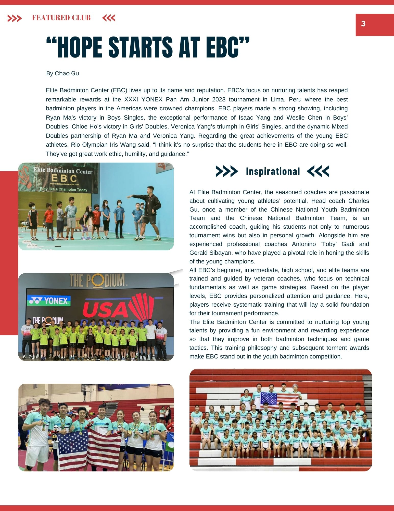
Elite Badminton Center (EBC) lives up to its name and reputation. EBC's focus on nurturing talents has reaped remarkable rewards at the XXXI YONEX Pan Am Junior 2023 tournament in Lima, Peru where the best badminton players in the Americas were crowned champions. EBC players made a strong showing, including Ryan Ma's victory in Boys Singles, the exceptional performance of Isaac Yang and Weslie Chen in Boys' Doubles, Chloe Ho's victory in Girls' Doubles, Veronica Yang's triumph in Girls' Singles, and the dynamic Mixed Doubles partnership of Ryan Ma and Veronica Yang. Regarding the great achievements of the young EBC athletes, Rio Olympian Iris Wang said, "I think it's no surprise that the students here in EBC are doing so well. They've got great work ethic, humility, and guidance."
❯❯❯ Inspirational ❮❮❮
At Elite Badminton Center, the seasoned coaches are passionate about cultivating young athletes' potential. Head coach Charles Gu, once a member of the Chinese National Youth Badminton Team and the Chinese National Badminton Team, is an accomplished coach, guiding his students not only to numerous tournament wins but also in personal growth. Alongside him are experienced professional coaches, Antonino "Toby" Gaut and Gerald Salayao, who have played a pivotal role in honing the skills of the young champions.
All EBC's beginner, intermediate, high school, and elite teams are trained and guided by veteran coaches, who focus on technical fundamentals as well as game strategies. Based on the player levels, EBC provides personalized attention and guidance. Here, players receive systematic training that will lay a solid foundation for their tournament performance.
The Elite Badminton Center is committed to nurturing top young talents by providing a fun environment and rewarding experience so that they improve in both badminton techniques and game tactics. This training philosophy and subsequent tournament awards make EBC stand out in the youth badminton competition.
Featured Club
Shuttle Through Time
A Chronicle of MBBC, Pioneers of Badminton in the United States
By McKenna Wilson
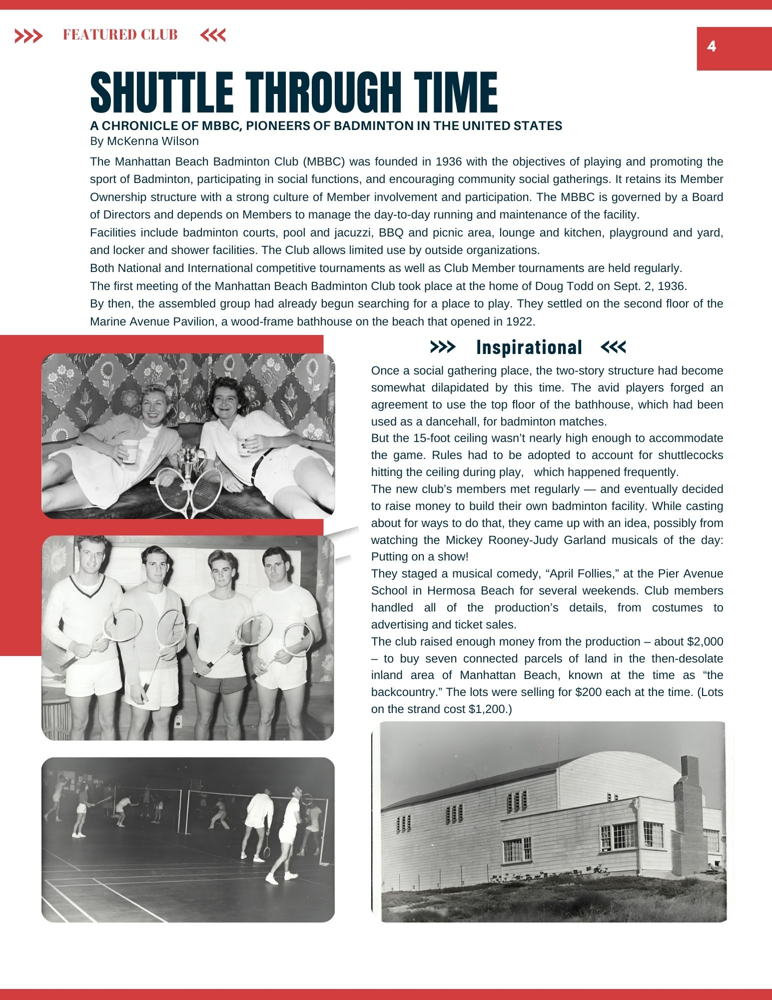
The Manhattan Beach Badminton Club (MBBC) was founded in 1936 with the objectives of playing and promoting the sport of Badminton, participating in social functions, and encouraging community social gatherings. It retains a Member Ownership structure with a strong culture of Member involvement and participation. The MBBC is governed by a Board of Directors and depends on Members to manage the day-to-day running and maintenance of the facility.
Facilities include badminton courts, pool and jacuzzi, BBQ and picnic area, lounge and kitchen, playground and yard, and locker and shower facilities. The Club allows limited use by outside organizations. Both National and International competitive tournaments as well as Club Member tournaments are held regularly.
The first meeting of the Manhattan Beach Badminton Club took place at the home of Doug Todd on Sept. 2, 1936. By then, the assembled group had already begun searching for a place to play. They settled on the second floor of the Marine Avenue Pavilion, a wood-frame bathhouse on the beach that opened in 1922.
❯❯❯ Inspirational ❮❮❮
Once a social gathering place, the two-story structure had become somewhat dilapidated by this time. The avid players forged an agreement to use the top floor of the bathhouse, which had been used as a dancehall, for badminton matches. The 15-foot ceiling wasn't nearly high enough to accommodate the game. Rules had to be adapted to account for shuttlecocks hitting the ceiling during play, which happened frequently.
The new club's members met regularly — and eventually decided to raise money to build their own badminton facility. While casting about for ways to do that, they came up with an idea, possibly from watching the Mickey Rooney-Judy Garland musicals of the day: Putting on a show!
They staged a musical comedy, "April Follies," at the Pier Avenue School in Hermosa Beach for several weekends. Club members handled all of the production's details, from costumes to advertising and ticket sales. The club raised enough money from the production — about $2,000 — to buy seven connected parcels of land in the then-desolate inland area of Manhattan Beach, known at the time as "the backcountry." The lots were selling for $200 each at the time. (Lots on the strand cost $1,200.)
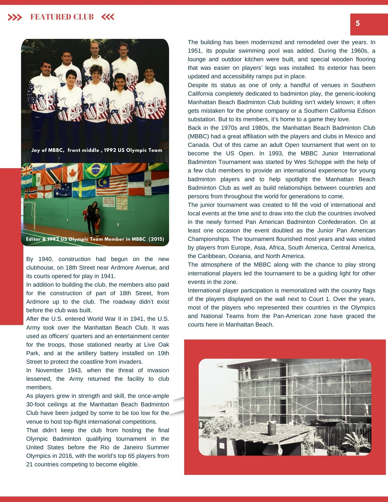
By 1940, construction had begun on the new clubhouse, on 18th Street near Ardmore Avenue, and its courts opened for play in 1941. In addition to building the club, the members also paid for the construction of part of 18th Street, from the club's entrance up to the club. The roadway didn't exist before the club was built.
After the U.S. entered World War II in 1941, the U.S. Army took over the Manhattan Beach Badminton Club. It was used as officers' quarters and an entertainment center for the troops, those stationed nearby at Live Oak Park, and at the artillery battery installed on 19th Street to protect the coastline from invaders. In November 1943, when the threat of invasion lessened, the Army returned the facility to club members.
The building has been modernized and remodeled over the years. In 1951, its popular swimming pool was added. During the 1960s, a lounge and outdoor kitchen were built, and special wooden flooring that was easier on players' legs was installed. Its exterior has been updated and accessibility ramps put in place.
Despite its status as one of only a handful of venues in Southern California completely dedicated to badminton play, the generic-looking Manhattan Beach Badminton Club building isn't widely known; it often gets mistaken for the phone company or a Southern California Edison substation. But to its members, it's home to a game they love.
Back in the 1970s and 1980s, the Manhattan Beach Badminton Club (MBBC) had a great affiliation with the players and clubs in Mexico and Canada. Out of this came an adult Open tournament that went on to become the US Open. In 1993, the MBBC Junior International Badminton Tournament was started by Wes Schoppe with the help of a few club members to provide an international experience for young badminton players and to help spotlight the Manhattan Beach Badminton Club as well as build relationships between countries and persons from throughout the world for generations to come.
The junior tournament was created to fill the void of international and local events at the time and to draw into the club the countries involved in the newly formed Pan American Badminton Confederation. On at least one occasion the event doubled as the Junior Pan American Championship. The tournament flourished most years and was visited by players from Europe, Asia, Africa, South America, Central America, the Caribbean, Oceania, and North America.
The atmosphere of the MBBC, along with the chance to play strong international players led the tournament to be a guiding light for other events in the area. International player participation is memorialized with the country flags of the players displayed on the wall next to Court 1. Over the years, most of the players who represented their countries in the Olympics and National Teams from the Pan-American zone have graced the courts here in Manhattan Beach.
Inspirational Journey
From Climbing Ladders to Smashing Birdies
My Unconventional Journey to Discovering Badminton as My True Calling
By Ella Lin
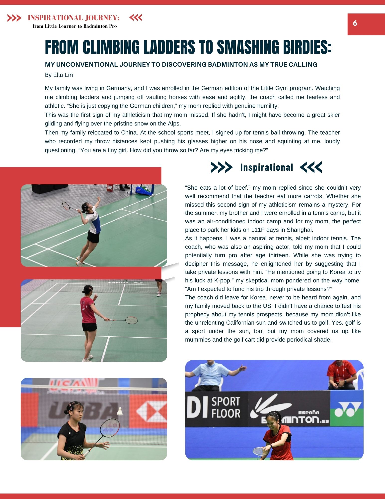
My family was living in Germany, and I was enrolled in the German edition of the Little Gym program. Watching me climbing ladders and jumping off vaulting horses with ease and agility, the coach called me fearless and athletic. "She is just copying the German children," my mom replied with genuine humility. This was the first sign of my athleticism that my mom missed. If she hadn't, I might have become a great skier gliding and flying over the pristine snow on the Alps.
Then my family relocated to China. At the school sports meet, I signed up for tennis ball throwing. The teacher who recorded my throw distances kept pushing his glasses higher on his nose and squinting at me, loudly questioning, "You are a tiny girl. How did you throw so far? Are you cheating?"
"She eats a lot of beef," my mom replied since she couldn't very well recommend that the teacher eat more carrots. Whether she missed this second sign of my athleticism remains a mystery. For the summer, my brother and I were enrolled in a tennis camp, but it was an air-conditioned indoor camp and for my mom, the perfect place to park her kids on 111F days in Shanghai.
As it happens, I was a natural at tennis, albeit indoor tennis. The coach, who was also an aspiring actor, told my mom that I could potentially turn pro after age thirteen. While she was trying to decipher this message, he enlightened her by suggesting that I take private lessons with him. "He mentioned going to Korea to try his luck at K-pop," my skeptical mom pondered on the way home. "Am I expected to fund his trip through private lessons?"
The coach did leave for Korea, never to be heard from again, and my family moved back to the US. I didn't have a chance to test his prophecy about my tennis prospects, because my mom didn't like the unrelenting California sun and switched us to golf. Yes, golf is a sport under the sun, too, but my mom covered up us like mummies and the golf cart did provide periodical shade.
Then we chanced upon a badminton gym one day. "I used to be good at badminton," my mom exclaimed. "You will be good, too. Let's check this place out." Application of the word "good" to my mom in any sports context warrants hysterical laughter, but my brother and I showed admirable self-restraint as we entered the gym and were greeted with the kind of hustle and bustle that we had never experienced in golf or even in our indoor tennis.
One coach was throwing birdies at his three students, sending them running, diving, and yelling all over the court. Another coach was teaching his bigger group of students a trick shot, eliciting quite a few "wows" from the students and starry-eyed spectators. Four adults were playing a doubles game and commenting on it at the same time, their swearing as frequent and as explosive as the only word they chose for a compliment, "Beautiful!"
My brother, who had always thought that golf was too sedentary for him, suddenly turned to my mom and fiercely hugged her. "You are so smart, mom! I totally agree with you, we can be so good at this!" Knowing that my mom bases many life decisions on her aversion to sun exposure, I chimed in, "And it's indoor. No sun, no skin damage." "My brother and I do make a good team, and our teamwork paid off again this time as we started beginner class at this gym the very next day. And that was how I found my true calling in badminton.
Ella Lin Bio
Ella Lin, born in 2006, is a top player in junior badminton in the US. She started badminton at eight and has been training at US Badminton Academy in Livermore, CA since October 2018.
Among Ella's career achievements are:
- US Junior National champion in the U15 to U19 age groups, and in U19, champion in all of the events for girls (singles, doubles, and mixed doubles)
- Top 8 in women's singles at the 2022 Badminton World Federation (BWF) World Junior Championships
- Gold medalist in both team event and individual events at the 2022 and 2023 Pan Am Junior Championships
- Women's singles champion at the 2023 US Adult National Championships
Ella also contributes to the badminton community by volunteering as a certified badminton umpire. Besides badminton, she loves Spanish, history, and psychology, as well as drawing birthday and holiday cards and designing posters.
Inspirational Journey
From Childhood Dream to International Triumphs
Navigating Self-Criticism, Setbacks, and Success in Badminton
By Veronica Yang
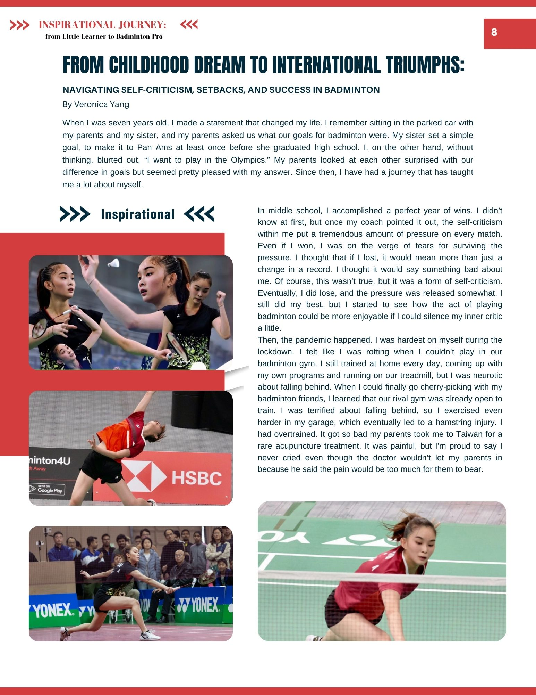
When I was seven years old, I made a statement that changed my life. I remember sitting in the parked car with my parents and my sister, and my parents asked us what our goals for badminton were. My sister set a simple goal, to make it to Pan Ams at least once before she graduated high school. I, on the other hand, without thinking, blurted out, "I want to play in the Olympics." My parents looked at each other surprised with our difference in goals but seemed pretty pleased with my answer. Since then, I have had a journey that has taught me a lot about myself.
In middle school, I accomplished a perfect year of wins. I didn't know at first, but once my coach pointed it out, the self-criticism within me put a tremendous amount of pressure on every match. Even if I won, I was on the verge of tears for surviving the pressure. I thought that if I lost, it would mean more than just a change in a record. I thought it would say something bad about me. Of course, this wasn't true, but it was a form of self-criticism. Eventually, I did lose, and the pressure was released somewhat. I still did my best, but I started to see how the act of playing badminton could be more enjoyable if I could silence my inner critic a little.
Then, the pandemic happened. I was hardest on myself during the lockdown. I felt like I was rotting when I couldn't play in our badminton gym. I still trained at home every day, coming up with my own programs and running on our treadmill, but I was neurotic about falling behind. When I could finally go cherry-picking with my badminton friends, I learned that our rival gym was already open to train. I was terrified about falling behind, so I exercised even harder in my garage, which eventually led to a hamstring injury. I had overtrained. It got so bad my parents took me to Taiwan for a rare acupuncture treatment. It was painful, but I'm proud to say I never cried even though the doctor wouldn't let my parents in because he said the pain would be too much for them to bear.
Since recovering from the injury, I have had to loosen up with my self-criticism. I learned how to take my time and go at my own pace. Trying to rush back would only make me feel worse. At first, I didn't win as much as I had before the injury. But with time, patience, family support, and being kinder to myself, I had my first ever singles win in a while this year at Junior Nationals followed up with three gold medals at the Pan American Championships.
Going to Worlds with a calmer mind helped make the experience full of joy for me. When I was competing against Thailand, I was overwhelmed with emotions walking on the court. When we lost, I was disappointed, but I also didn't beat myself up. I was proud of how far and how much I had accomplished at an international level and learned how to work with different players on the team.
Veronica Yang Bio
Veronica Yang, a prominent US junior badminton player, has showcased remarkable talent since her early years. Achieving the National Junior Champion title multiple times, her prowess reached new heights with outstanding performances in various Pan Am tournaments. In 2015, she secured the Pan Am triple crown in Peru, followed by another triumph in Brazil in 2018.
Veronica's success continued in 2023 when she played as one of the key people contributing to the team's victory. Individually, she claimed the Women's Singles (WS) and Mixed Doubles (XD) champion titles, along with Women's Doubles (WD) 2nd place. Her exceptional skills were also showcased on the global stage at the 2023 World Junior Championship, where she reached the top 16 in Women's Singles.
Inspirational Journey
"Chasing Olympic Gold: The Dream of a Californian Teenager"
Endure
By Michele Cruz
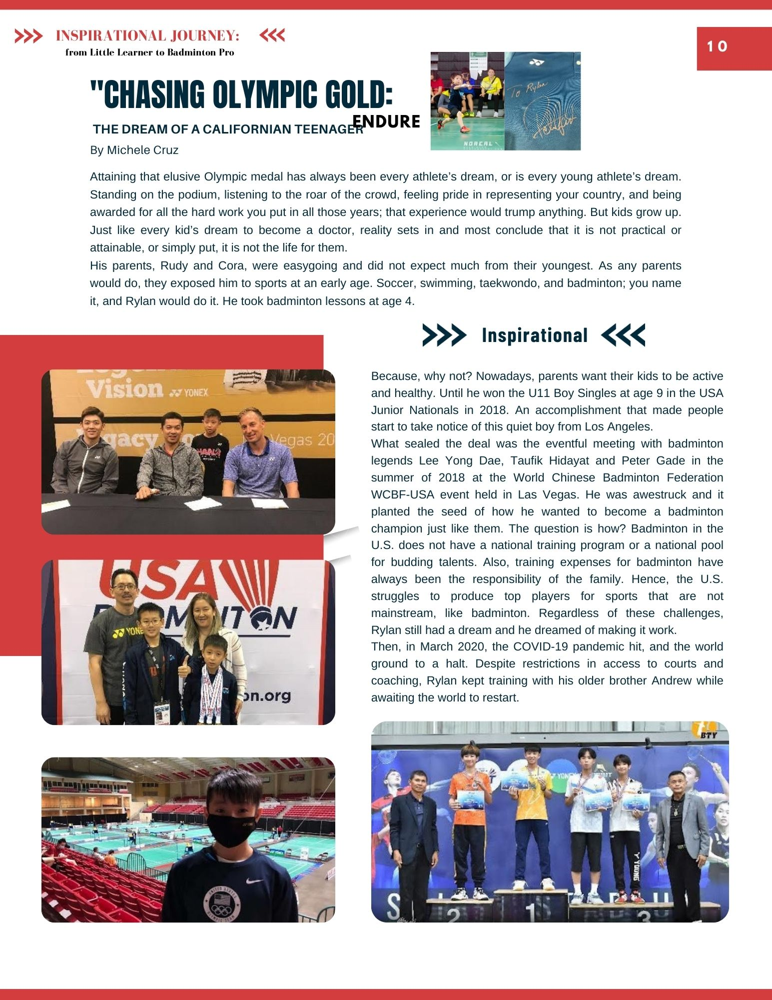
Attaining that elusive Olympic medal has always been every athlete's dream, or is every young athlete's dream. Standing on the podium, listening to the roar of the crowd, feeling pride in representing your country, and being awarded for all the hard work you put in all those years; that experience would trump anything. But kids grow up. Just like every kid's dream to become a doctor, reality sets in and most conclude that it is not practical or attainable, or simply put, it is not the life for them.
His parents, Rudy and Cora, were easygoing and did not expect much from their youngest. As any parents would do, they exposed him to sports at an early age. Soccer, swimming, taekwondo, and badminton; you name it, and Rylan would do it. He took badminton lessons at age 4.
Because, why not? Nowadays, parents want their kids to be active and healthy. Until he won the U11 Boy Singles at age 8 in the USA Junior Nationals in 2018. An accomplishment that made people start to take notice of this quiet boy from Los Angeles. What sealed the deal was the eventful meeting with badminton legends Lee Yong Dae, Taufik Hidayat and Peter Gade in the summer of 2018 at the World Chinese Badminton Federation WCBF-USA event held in Las Vegas. He was awestruck and it planted the seed of how he wanted to become a badminton champion just like them. The question is how? Badminton in the U.S. does not have a national training program or a national pool for budding talents. Also, training expenses for badminton have always been the responsibility of the family. Hence, the U.S. struggles to produce top players for sports that are not mainstream, like badminton. Regardless of these challenges, Rylan still had a dream and he dreamed of making it work.
Then, in March 2020, the COVID-19 pandemic hit, and the world ground to a halt. Despite restrictions in access to courts and coaching, Rylan kept training with his older brother Andrew while awaiting the world to restart.
After 2 years, the realization that training locally was not enough. Rylan wanted to focus and devote his time fully to badminton. His parents were reluctant at first, knowing that the life of a professional athlete is difficult, and he would face a lot of trials. Yet they understood his aspirations, and wholeheartedly supported his decision.
Traveling to and training in another country was a revelation. Far from the comforts of home and family, dealing with poorly ventilated gyms and unfamiliar food was a lot for a teen to endure. Training 7-8 hours a day, week after week, month after month, all that hard work eventually paid off with numerous top podium finishes in his U15 age group. Competing against players who have been training professionally far longer than him meant a lot. That means, he was on the right track.
Rylan ended the year 2023 with an amazing spot on the podium in the U17 category, playing up an age group and beating older athletes in the U17 age group from all over Asia. He felt proud to stand on the podium with champions from Hong Kong, Thailand, and Korea.
Now at age fifteen, Rylan will continue to stay focused on his training. The life of a professional athlete is simple, with repetitive routines of sleeping, eating, and training. However, not a lot of people understand the tightrope that players walk every single day. Doubts, fatigue, injuries; one misstep and it can derail a young player's career. Rylan faces these challenges every day, far from home, family, and friends, but knowing that the very same people who are in the distance are the same people supporting and rallying behind him gives him the wings to fly. And someday, an Olympic medal will be in his hands.
Shuttle Enthusiasts Chronicles
Beyond the Birdie
How Badminton Transformed from a Sport to a Lifelong Connection
By Claire Chen
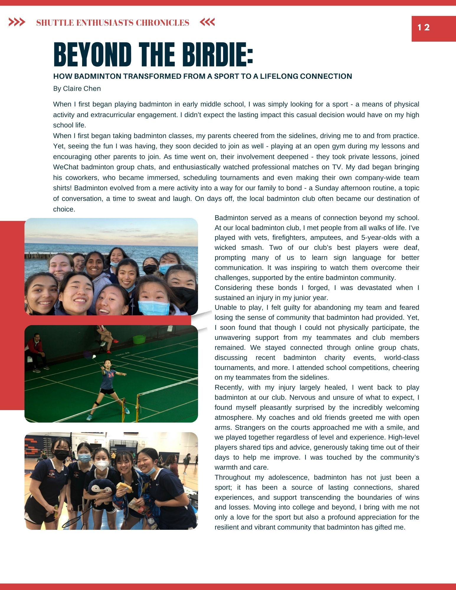
When I first began playing badminton in early middle school, I was simply looking for a sport — a means of physical activity and extracurricular engagement. I didn't expect the lasting impact this casual decision would have on my high school life.
When I first began taking badminton classes, my parents cheered from the sidelines, driving me to and from practice. Yet, seeing the fun I was having, they soon decided to join as well — playing at an open gym during my lessons and encouraging other parents to join. As time went on, their involvement deepened — they took private lessons, joined WeChat badminton group chats, and enthusiastically watched professional matches on TV. My dad began bringing his coworkers, who became immersed, scheduling tournaments and even making their own company-wide team shirts! Badminton evolved from a mere activity into a way for our family to bond — a Sunday afternoon routine, a topic of conversation, a time to sweat and laugh. On days off, the local badminton club often became our destination of choice.
Badminton served as a means of connection beyond my school. At our local badminton club, I met people from all walks of life. I've played with vets, firefighters, amputees, and 5-year-olds with a wicked smash. Two of our club's best players were deaf, prompting many of us to learn sign language for better communication. It was inspiring to watch them overcome their challenges, supported by the entire badminton community.
Considering these bonds I forged, I was devastated when I sustained an injury in my junior year. Unable to play, I felt guilty for abandoning my team and feared losing the sense of community that badminton had provided. Yet, I soon found that though I could not physically participate, the unwavering support from my teammates and club members remained. We stayed connected through online group chats, discussing recent badminton charity events, world-class tournaments, and more. I attended school competitions, cheering on my teammates from the sidelines.
Recently, with my injury largely healed, I went back to play badminton at our club. Nervous and unsure of what to expect, I found myself pleasantly surprised by the incredibly welcoming atmosphere. My coaches and old friends greeted me with open arms. Strangers on the courts approached me with a smile, and we played together regardless of level and experience. High-level players shared tips and advice, generously taking time out of their days to help me improve. I was touched by the community's warmth and care.
Throughout my adolescence, badminton has not just been a sport; it has been a source of lasting connections, shared experiences, and support transcending the boundaries of wins and losses. Moving into college and beyond, I bring with me not only a love for the sport but also a profound appreciation for the resilient and vibrant community that badminton has gifted me.
Claire Chen Bio
Claire Chen is a coming MIT student. She has been playing badminton since 6th grade, participating in both her high school's varsity team and her local badminton club. In addition to badminton, Claire enjoys creating art, volunteering with children, and playing with her puppy, Nala. She is excited to continue her badminton journey in college and beyond!
Shuttle Enthusiasts Chronicles
Dragon Badminton Club
Exploring Badminton's Evolution: From Sport to Friendship and Lifestyle
By Wei Ding
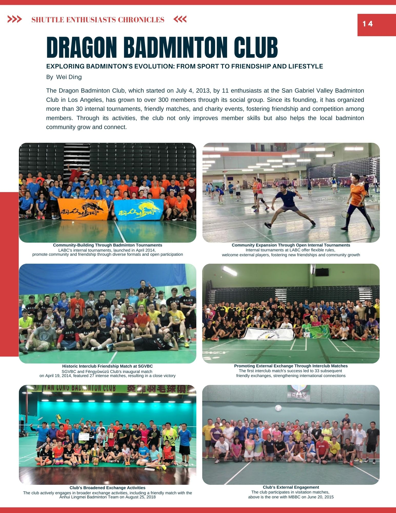
The Dragon Badminton Club, which started on July 4, 2013, by 11 enthusiasts at the San Gabriel Valley Badminton Club in Los Angeles, has grown to over 300 members through its social group. Since its founding, it has organized more than 30 internal tournaments, friendly matches, and charity events, fostering friendship and competition among members. Through its activities, the club not only improves member skills but also helps the local badminton community grow and connect.
Events Review
Events Review from Star
By Ying Chen
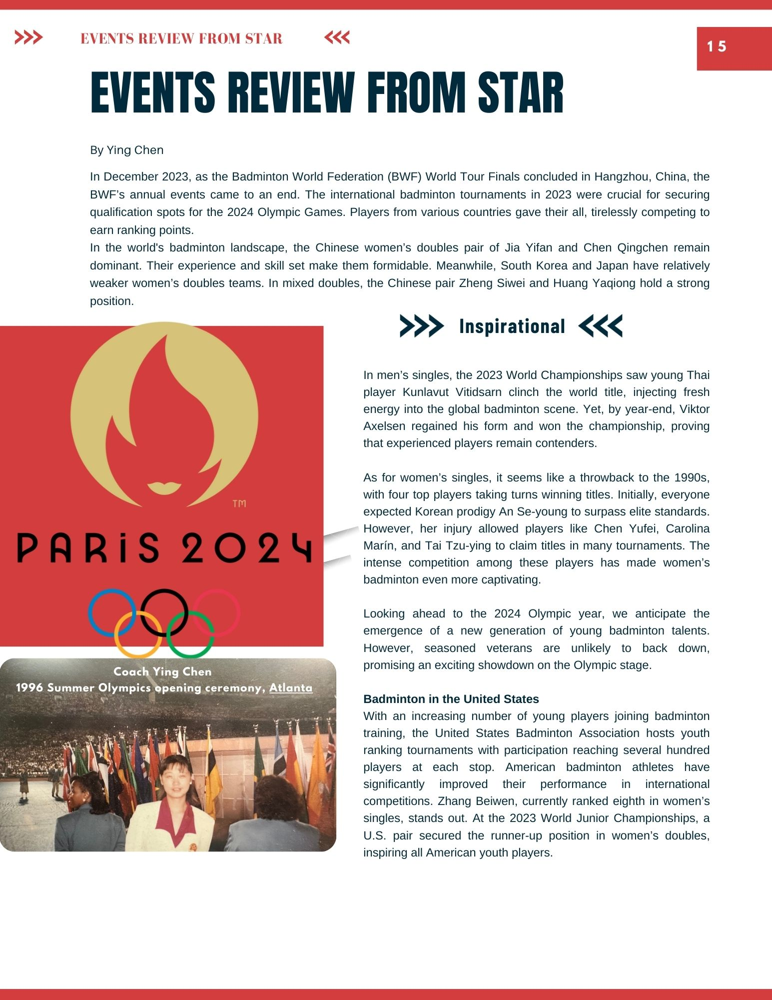
In December 2023, as the Badminton World Federation (BWF) World Tour Finals concluded in Hangzhou, China, the BWF's annual events came to an end. The international badminton tournaments in 2023 were crucial for securing qualification spots for the 2024 Olympic Games. Players from various countries gave their all, tirelessly competing to earn ranking points.
In the world's badminton landscape, the Chinese women's doubles pair of Jia Yifan and Chen Qingchen remain dominant. Their experience and skill set make them formidable. Meanwhile, South Korea and Japan have relatively weaker women's doubles teams. In mixed doubles, the Chinese pair Zheng Siwei and Huang Yaqiong hold a strong position.
In men's singles, the 2023 World Championships saw young Thai player Kunlavut Vitidsarn clinch the world title, injecting fresh energy into the global badminton scene. Yet, by year-end, Viktor Axelsen regained his form and won the championship, proving that experienced players remain contenders.
As for women's singles, it seems like a throwback to the 1990s, with four top players taking turns winning titles. Initially, everyone expected Korean prodigy An Se-young to surpass elite standards. However, her injury allowed players like Chen Yufei, Carolina Marin, and Tai Tzu-ying to claim titles in many tournaments. The intense competition among these players has made women's badminton even more captivating.
Looking ahead to the 2024 Olympic year, we anticipate the emergence of a new generation of young badminton talents. However, seasoned veterans are unlikely to back down, promising an exciting showdown on the Olympic stage.
Badminton in the United States
With an increasing number of young players joining badminton training, the United States Badminton Association hosts youth ranking tournaments with participation reaching several hundred players at each stop. American badminton athletes have significantly improved their performance in international competitions. Zhang Beiwen, currently ranked eighth in women's singles, stands out. At the 2023 World Junior Championships, a U.S. pair secured the runner-up position in women's doubles, inspiring all American youth players.
Tournament Summary
Tournament Summary
By Bernice Xu
2024 Professional Tournaments
| Date | Name | Prize Money | Place |
|---|
| 2/27-3/3 | YONEX German Open 2024 | $210,000 | Mulheim, Germany |
| 3/5-3/10 | YONEX French Open 2024 | $850,000 | Paris, France |
| 3/12-3/17 | Orleans Masters Badminton presented by VICTOR 2024 | $210,000 | Orleans, France |
| 3/12-3/17 | YONEX All England Open Badminton Championships 2024 | $1,300,000 | Birmingham, England |
| 3/19-3/14 | YONEX Swiss Open 2024 | $210,000 | Basel, Switzerland |
| 3/26-3/31 | Madrid Spain Masters 2024 | $210,000 | Madrid, Spain |
| 5/14-5/19 | Thailand Open 2024 | $420,000 | Bangkok, Thailand |
| 5/21-5/26 | Malaysia Masters 2024 | $420,000 | Kuala Lumpur, Malaysia |
| 5/28-6/2 | Singapore Open 2024 | $850,000 | Singapore |
| 6/4-6/9 | Indonesia Open 2024 | $1,300,000 | Jakarta, Indonesia |
| 6/11-6/16 | SATHIO GROUP Australian Open 2024 | $420,000 | Sydney, Australia |
| 6/25-6/30 | US Open 2024 | $210,000 | TBC, USA |
| 7/2-7/7 | Canada Open 2024 | $420,000 | Calgary, Canada |
| 8/20-8/25 | Japan Open 2024 | $850,000 | Tokyo, Japan |
| 8/27-9/1 | Korea Open 2024 | $420,000 | Seoul, Korea |
| 9/3-9/8 | Taipei Open 2024 | $420,000 | Taipei, China |
| 9/10-9/15 | Hong Kong Open 2024 | $420,000 | Hong Kong |
| 9/17-9/22 | Macau Open 2024 | $210,000 | Macau |
| 10/8-10/13 | Arctic Open 2024 | $420,000 | Vantaa, Finland |
| 10/15-10/20 | Denmark Open 2024 | $850,000 | Odense, Denmark |
| 10/29-11/03 | Hylo Open 2024 | $210,000 | Saarbrucken, Germany |
| 11/5-11/10 | Korea Masters 2024 | $210,000 | Gwangju, Korea |
| 11/12-12/7 | Japan Masters 2024 | $420,000 | Kumamoto, Japan |
| 11/19-11/24 | China Masters 2024 | $850,000 | Shenzhen, China |
| 11/16-12/1 | Syed Modi India International 2024 | $210,000 | Lucknow, India |
2024 Junior Tournaments
| Date | Name | Region |
|---|
| 2/17-2/19 | 2024 YONEX SoCal ORC&SHONAI SELECTION EVENT | SoCal |
| 2/23-2/25 | 2024 NE MASSBAD OLC | NE |
| 2/24-2/25 | 2024 MIDWEST CRC | Midwest |
| 3/9-3/10 | 2024 SOUTH CRC | South |
| 3/29-4/1 | YONEX U.S. SELECTION EVENT for Pan Am Junior Championships & World Junior Championships | National |
| 4/27-4/28 | 2024 DAVE FREEMAN JR. OLC | SoCal |
| 7/2-7/8 | 2024 YONEX U.S. JUNIOR NATIONAL CHAMPIONSHIPS | National |